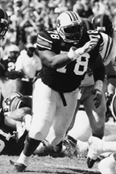

Jeno James
Offensive Tackle
Most poets say they find inspiration in their work from everyday life. If Jeno James finds inspiration in his poems from his everyday life, his poetry may be filled with some shoulder pads popping, some audibles, and maybe even thoughts of flattening a defensive lineman.
James, a 6-foot-4, 292-pound would-be-muse, admits that after a grueling game, practice, or class, he likes to go home and put football, school, and everyday life out of his head through reading and writing poetry. "It takes me to a whole different world," James said. "I'm just a different person. In my imagination. I'm who I want to be."
If James likes getting away from his everyday life, there are countless young football up-and-comers that hope to experience what he has at Auburn, or at least the success he has experienced on the field. James has emerged as one of Auburn's most consistent offensive linemen over the past three seasons. He has started in every game he's played in at Auburn, dating back to his first game in 1996.
Playing the offensive line when James arrived at Auburn was the furthest thing from his mind. He was a highly recruited defensive lineman out of Montgomery, with little experience on the offensive front. The experience he had, he really had never wanted. Defense was his game. That's what he excelled at while playing for Montgomery's Sidney Lanier High School, whose mascot is, fittingly, the Poets.
When the Auburn offensive line coach told James during his freshman year that he would be moved to the offensive line, James started rethinking his position on being at Auburn.
"I was real disappointed," James said. "I had played a little offense in high school, lining up in special plays. But defense was what I was good at."
James was told that he could play defense, but his future was on offense.
"Coach told me that I could be a good defensive lineman, but a great offensive lineman," James said.

|
|
|
Of course, the transition was difficult, especially for a freshman having to get used to not only a new position, but to life away from home as well. James' father Joseph, Sr., was always a good listening pad for Jeno's worries.
"My father's what kept me strong," James said. "He was the first one I called. He was always there to keep me up and keep me going. I'm blessed to have a father like that."
As James learned how to play the offensive line, signs were pointing towards a redshirt season. This was tough for a kid who never had to sit on the bench in high school. Of course, when you're bigger and stronger than the rest of the bunch, coaches want you in there. James learned real quick that once you get to college, you're no longer the big kid on the block.
"I wanted to play so badly," James said. "I had never even played offense in a game before, and I still just wanted to go out there and play anyway. They told me I didn't have enough offensive skills to play yet. I just worked hard, because I was trying my best not to stay out of the game too long.
"The hardest part of learning to play on the offensive line was staying under control. I'm very aggressive, and it got me all out of whack. It was making me miss blocks because I would get going so hard and fast that I would run right past the people I was supposed to block."
So, he took his redshirt in 1995 and prepared for the next year. James finished spring drills as a backup offensive tackle, but impressed coaches so much the following fall that he earned a starting position, one he has kept ever since. He was named to the Freshman All-SEC team following a strong season in 1996.
James made the second team All-SEC squad in 1997, as well as recording the top offensive lineman performance last season.
This season, James was rated by Lindy's magazine as one of the top 15 offensive tackles in the country as well as a preseason All-SEC second-team selection. He's also having to learn to play right tackle position as well. But with so much football consuming his days, reading and writing have been a soothing outlet for James. "I've always loved to read and write, ever since I was a small child," James said.
But, it's not as if James stays hid away in an attic, trying to write the next bestseller. He has other things that take up his time. He has a girlfriend of over a year whom he met here at Auburn. Plus, like numerous others on the Auburn football team, James likes playing video games, particularly "NFL gameday" on Sony Playstation.
"When I come home to Montgomery, my cousins and I play it all day and all night," James said.
Other perks of living just 45 minutes down the road are access to his parents' cooking, which he prefers over any restaurant.
"My mother cooks a broccoli casserole with chicken in it, that is so good," James said. "My favorite thing my father cooks is chicken wings. He makes them real spicy."
James won't eat at the many chicken wing spots around Auburn, preferring to save his taste buds for his father's special recipe.
"He brings them every time he comes and visits. He brought some the other week for the Ole Miss game," James said.
As James looks forward to the rest of the season, some may wonder what his future holds. His love of poetry will always be there and he is one poet defenses do not want to mess with.
|  |
Up Close With Jeno James
When you were young, what did you want to be when you grew up?
"I wanted to be everything. I wanted to be a scientist, artist, actor, poet. I wanted to do all kinds of things."
What's your favorite part about Auburn?
"The Tiger Walk."
What's your favorite book?
"Disappearing Act by Terry McMillan."
What's your favorite TV show?
"Good Times."
What's your favorite cereal?
"Frosted Flakes."
If you could play any sport professionally other than football what would you play?
"Volleyball."
© 1999 Auburn Network, Inc.